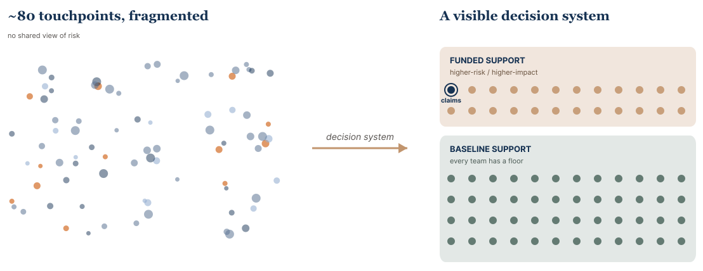

Walmart Associate Experience · 2025–2026
Associate Experience Portfolio Strategy
I turned a fragmented, roughly 80-touchpoint associate-experience portfolio into a visible decision system, helping teams prioritize accessibility risk while giving leadership a scalable model for where deeper support and investment would create the most value.
One Reorg and a Portfolio That Grew Overnight
- 3 grew to 5
- Teams
- 16 grew to 70+
- Designers
- ~10 grew to ~80
- Touchpoints
- 1
- Decision system
From Scattered Requests to a Decision System

One Organization, ~80 Touchpoints, No Shared View of Risk
A reorganization pulled a large set of associate-experience products into one newly consolidated organization - internal tools, public-facing experiences, required workflows, and shared systems, some brand new to the teams now responsible for them. Overnight, my accessibility scope grew from 3 teams and 16 designers to 5 teams and 70+ designers across an organization with 5 directors, and the portfolio I was responsible for jumped from roughly 10 touchpoints to about 80.
The visible problem was fragmented accessibility coverage - some products supported, others never assessed, and no single view of the portfolio. The real problem was that leadership had no shared way to see risk, compare priorities, and decide where deeper support should go. A portfolio-strategy problem, not a compliance backlog.
I Reframed “Run a Gap Analysis” Into “Build a Decision System”
My manager suggested a gap analysis might help. I translated that into a broader strategy: make the portfolio visible, define a risk-based way to prioritize, and design a support structure that could scale across the new organization.
I personally built a working inventory and ran a deliberately high-level assessment across roughly 80 touchpoints - not a deep audit, but enough to make the landscape visible - and paired it with one-on-one interviews with each portfolio director. The inventory made the portfolio visible; the conversations surfaced context a spreadsheet could not.
What the first-pass inventory captured
- what each touchpoint was, and who it served
- internal or public-facing
- approximate reach and ownership
- known risk or support signals
- where deeper review might be justified
The Sharpest Risk Came From a Conversation, Not a Spreadsheet
During director interviews, one surfaced a claims-related associate touchpoint with elevated legal and user-risk exposure - because users could already be mid-claim, accessibility barriers there carried a different level of risk than a typical internal workflow. That touchpoint moved into funded support.
That is the part that proves the method: I was not collecting product names, I was building a discovery process that could surface hidden risk, translate it into priority, and connect it to a support decision.
What I Designed and Led
I personally designed and led:
- the roughly 80-touchpoint portfolio inventory and high-level assessment model
- director discovery conversations
- a two-layer risk-and-impact prioritization model
- baseline and funded support lanes
- priority-movement criteria for executive priority, major initiatives, immediate needs, or elevated risk
- change-management language to explain why one product got deeper support while another stayed lighter
How Work Was Prioritized
The model worked in two layers: it first protected work that couldn’t be ignored - essential, high-reach, and public-facing surfaces - then compared everything else on shared factors, making leadership judgment visible and defensible instead of a loudest-voice exercise.

Diagram details: prioritization logic
The diagram shows a two-layer decision process for prioritizing accessibility support across a large portfolio.
- Layer one identifies work that needs elevated attention because it is essential, high-reach, public-facing, legally sensitive, or difficult for users to avoid.
- Layer two compares other work using factors such as reach, pattern reuse, shared-system impact, complexity, known accessibility risk, leadership priority, major initiative timing, and immediate need.
- Leadership calibration makes strategic exceptions visible instead of leaving them implicit.
- The output routes work into either baseline support or funded support.
Two Lanes of Support, So Every Team Had a Floor
Baseline support was the floor for every product - minimum expectations, shared standards, and a path to escalate - while funded support went to critical, higher-risk, or higher-impact work. It avoided both bad extremes: treating every product as equally specialist-hungry, or leaving lower-priority teams with nothing.

Diagram details: two-lane support model
The diagram shows how the portfolio strategy separated support into two lanes while keeping every product visible.
- Baseline support applies across the portfolio through minimum expectations, shared standards, training, pattern guidance, and a way to escalate if risk changes.
- Funded support applies to critical workflows, higher-risk experiences, public-facing surfaces, shared systems, major initiatives, or immediate needs.
- Funded work can receive deeper design review, manual testing, annotation support, office hours, cross-functional follow-through, and clearer review paths.
- The model prevents an all-or-nothing support pattern by giving every team a lane and a path to deeper help.
Outcome: Decision Infrastructure
The strongest outcome was a durable capability - not a revenue or cost figure, but a system the organization could keep using.
- Roughly 80 touchpoints became a portfolio that could be discussed as a system instead of scattered requests.
- Leadership gained a defensible way to compare risk and decide where deeper support should go.
- Every team had a baseline instead of an all-or-nothing model, with a path into funded support for higher-risk work.
- A claims-related associate touchpoint moved into funded support after director discovery surfaced it.
- Teams began pulling on the work directly - asking for materials to share with peers outside funded support, and for help making the proactive case earlier.
- The work reframed accessibility as product quality rather than a compliance checkbox, clarifying that accessible components still require flow-level review.